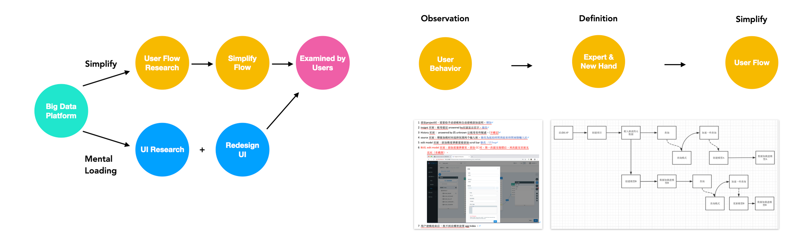
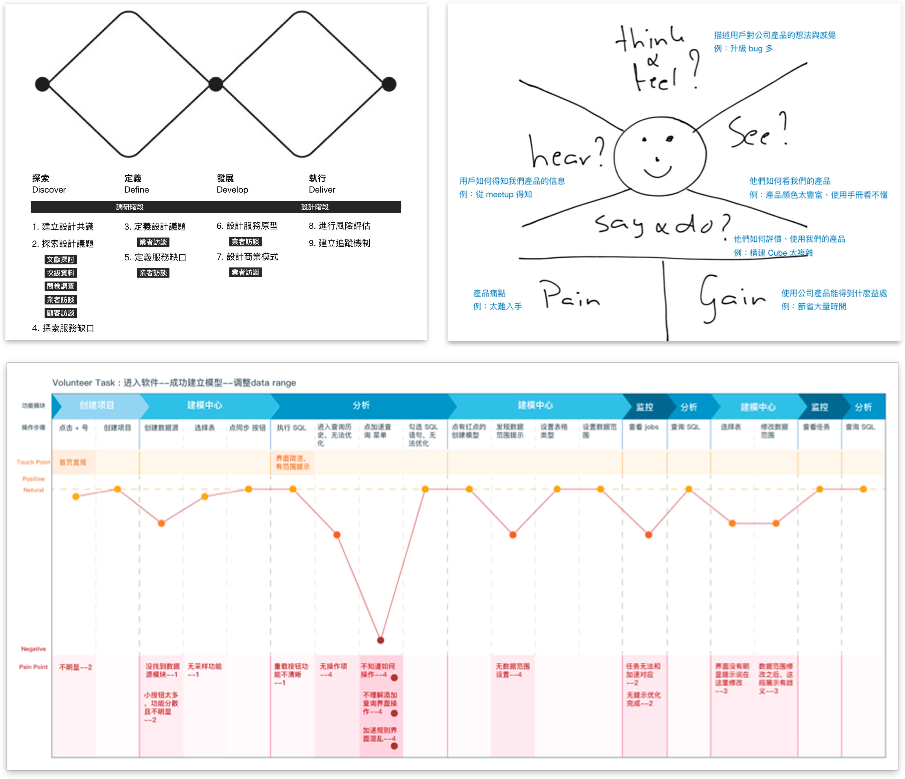
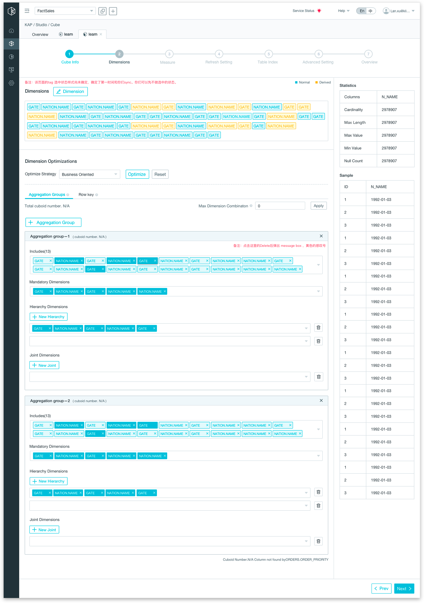
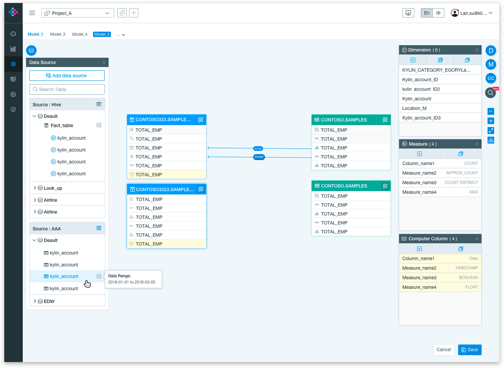
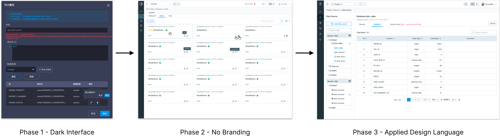
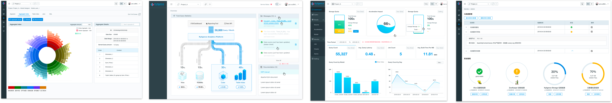

Kyligence Enterprise: Simplifying Big Data Modeling
Transforming sophisticated SQL-heavy engineering workflows into an intuitive PaaS experience, empowering data analysts to build high-performance models with ease.
My Role
Lead UX Designer, DT Workshop Facilitator, Design System Architect
Project Scope
PaaS Platform Redesign, SQL Workflow Optimization, Enterprise Design System (0 to 1), Data Visualization

Kyligence Enterprise (KE) is a high-threshold software that requires deep SQL knowledge and an understanding of big data architecture. This high barrier to entry made it difficult for new users. My goal was to simplify complex engineering workflows into intuitive experiences for both experts and novices.
Design Methodology: From Chaos to Clarity
I introduced a structured research process to validate user behaviors and redefine the product's core interaction model.
Utilized the Double-Diamond process to diverge and discover pain points, then converge on specific expert vs. beginner functional paths.
Guided stakeholders through Empathy Mapping and User Journey workshops to align internal teams with real-world user frustrations.

Strategic UX Improvements
We identified 4 critical problems: Sophisticated settings, inconsistent behavior, poor UI feedback, and lack of visual data trends.

Users were forced through 7 mandatory steps with redundant functions exposed, leading to high abandonment rates.

Implemented a collapsible advanced settings feature. This allows beginners to focus on core tasks while experts retain full control.
Enhanced Data Visualization
Analysts expressed a strong need for tracking data fluctuations. I redesigned the dashboard to move beyond text logs to high-density visual diagnostics.


- Integrated trend charts for model comparison.
- Unified branding with a clean, tech-focused visual language (transitioning from deep dark to professional white themes).
- Reinforced system reminders and feedback loops to prevent user errors during long-running data tasks.
UX Transformation Summary
| Dimension | Legacy Experience | Redesigned Solution |
|---|---|---|
| User Flow | 7 mandatory steps; rigid and engineering-driven workflow. | Guided wizard with smart defaults; hidden advanced functions for power users. |
| UI Feedback | Fragmented UI with high cognitive load; poor error prevention mechanisms. | Reinforced system reminders; integrated corporate branding with professional white theme. |
| Data Insight | Text-heavy logs; no visual trend observation for data fluctuations. | Comprehensive visual dashboards with high-density diagnostic charts and analytics. |
| Consistency | Inconsistent module behavior across different product versions. | Unified Design System established from 0 to 1 across the entire PaaS ecosystem. |
Full Case Study
Download the detailed PDF version for more technical insights and methodology details.